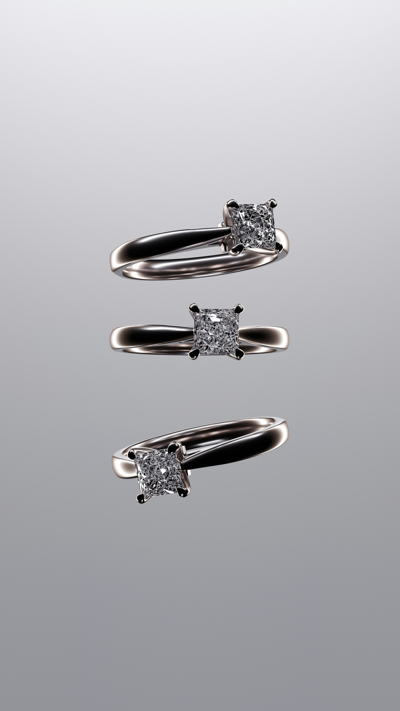
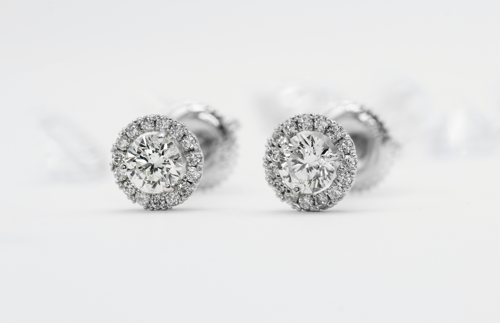
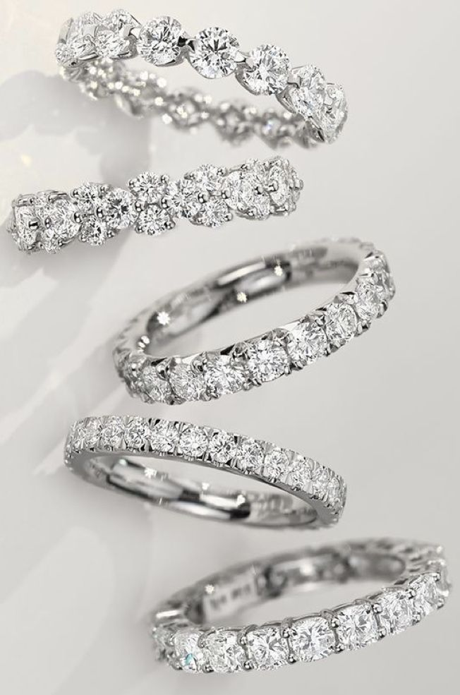
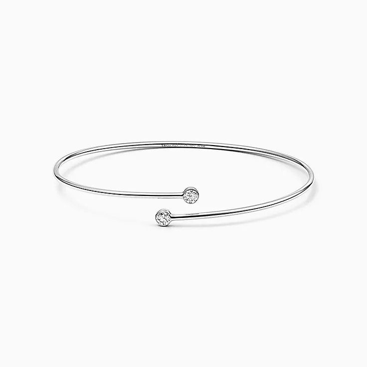
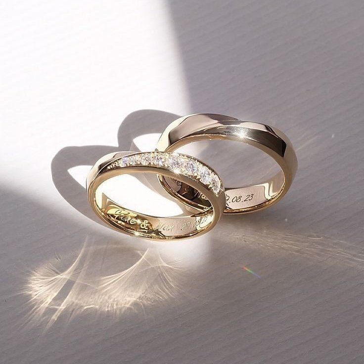
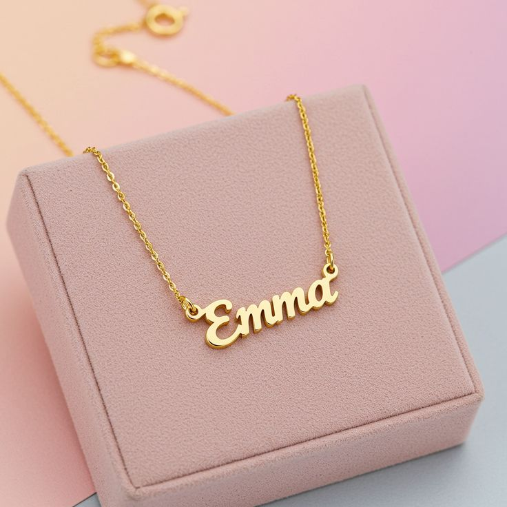
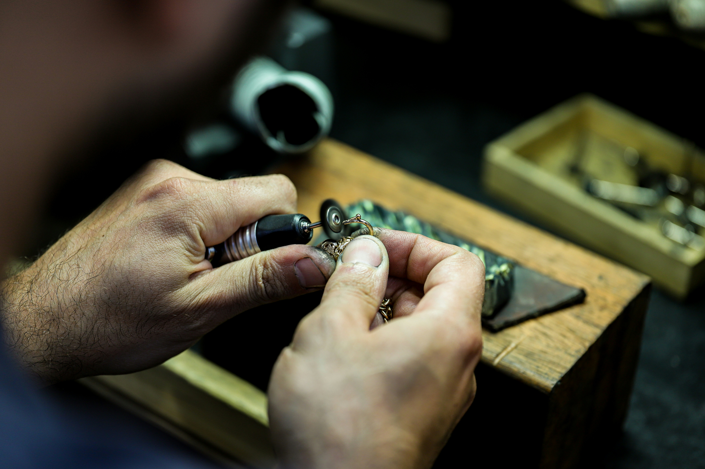

Portafoglio
La Nostra Galleria








Nel Centro Storico Di Reggio Calabria
Creiamo gioielli unici con l'arte tramandata di generazione in generazione. Ogni pezzo racconta una storia di bellezza, passione e maestria artigianale.
Dal 1990 · Artigianato Calabrese

Nel cuore pulsante del centro storico di Reggio Calabria, il nostro laboratorio è un luogo dove la tradizione incontra l'eccellenza. Da oltre trent'anni trasformiamo metalli preziosi e gemme in opere d'arte da indossare.
Ogni giorno, con gli stessi strumenti e la stessa dedizione dei grandi orafi calabresi, lavoriamo con passione per creare gioielli unici, restaurare pezzi storici e dare nuova vita a oggetti preziosi carichi di memoria e affetto.
Dalla creazione su misura al restauro delicato, offriamo un servizio completo per ogni esigenza legata all'oreficeria.
Realizziamo gioielli unici su progetto, partendo dal tuo concept o da un disegno. Ogni pezzo nasce da una consulenza personalizzata e viene lavorato interamente a mano.
Restituiamo bellezza e vita ai tuoi gioielli danneggiati o consumati dal tempo. Saldature, reimpostazione di pietre, pulizia professionale e lucidatura.
Modifichiamo la misura dei tuoi anelli con precisione assoluta, mantenendo intatta l'estetica del pezzo originale e la qualità delle pietre montate.
Montiamo diamanti, rubini, smeraldi e qualsiasi pietra preziosa con le tecniche più appropriate: castoni, griffe, pavé e montature personalizzate.
Trasformiamo gioielli vecchi o non più indossati in nuovi capolavori. Recuperiamo il metallo e le pietre per creare qualcosa di completamente nuovo e personale.
Offriamo perizie professionali e consulenze personalizzate per l'acquisto di pietre preziose, la valutazione di gioielli antichi e la pianificazione di progetti orafi.






Scorri il cursore per vedere la trasformazione. Ogni restauro è una storia di rinascita.
Restauro completo con rimozione ossidazioni, lucidatura professionale e reimpostazione della pietra centrale. Ritrovata la brillantezza originale.
Lucidatura · ReimpostazioneSaldatura delle maglie rotte, pulizia ad ultrasuoni, lucidatura e rimontaggio della pietra in castoni nuovi. Restituita al suo antico splendore.
Saldatura · Castoni · PuliziaRimozione dell'ossidazione, lucidatura completa e montaggio di una nuova pietra al posto di quella perduta. Coppia di nuovo perfettamente abbinata.
Lucidatura · Sostituzione PietraRaddrizzamento, rimozione delle ammaccature, ricottura, battitura al mandrino e lucidatura finale. La fede ha ritrovato la sua forma perfetta.
Riparazione · Battitura · LucidaturaDescrivici il tuo progetto o il gioiello da restaurare. Ti risponderemo entro 24 ore con una stima personalizzata.
Trascina le foto qui o clicca per caricare
JPG, PNG fino a 10 MB per file
Grazie per averci contattato. Ti risponderemo entro 24 ore con un preventivo personalizzato.
Nel frattempo puoi chiamarci al +39 338 774 6317.